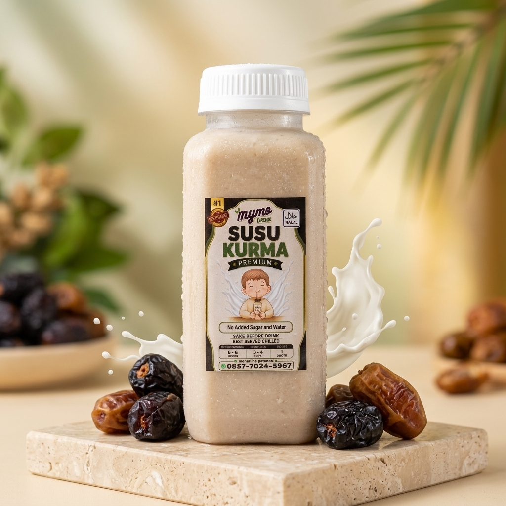
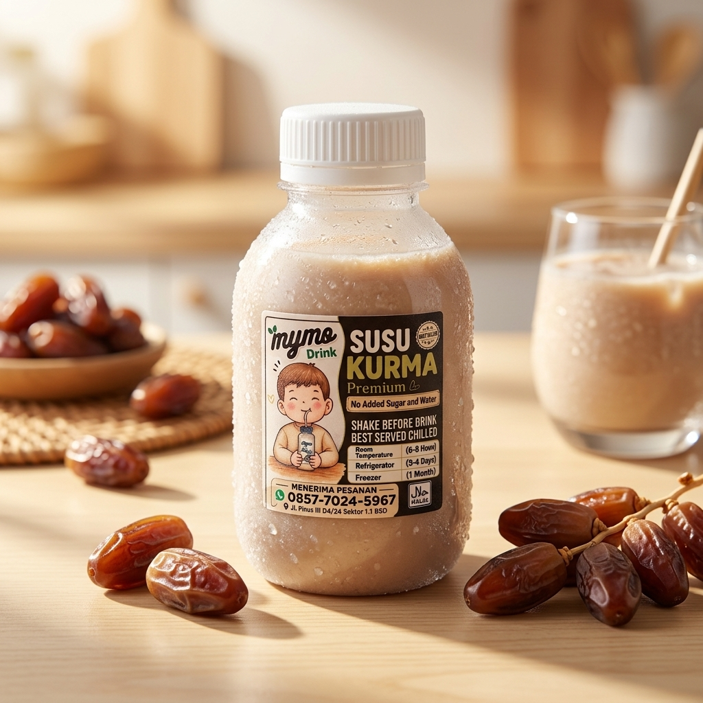
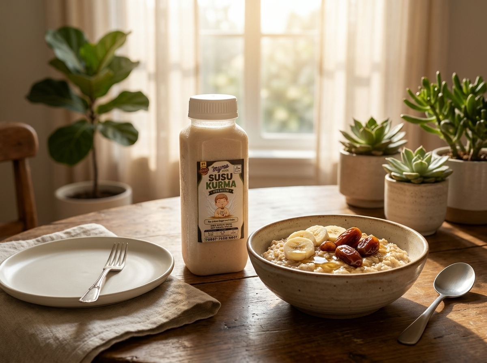
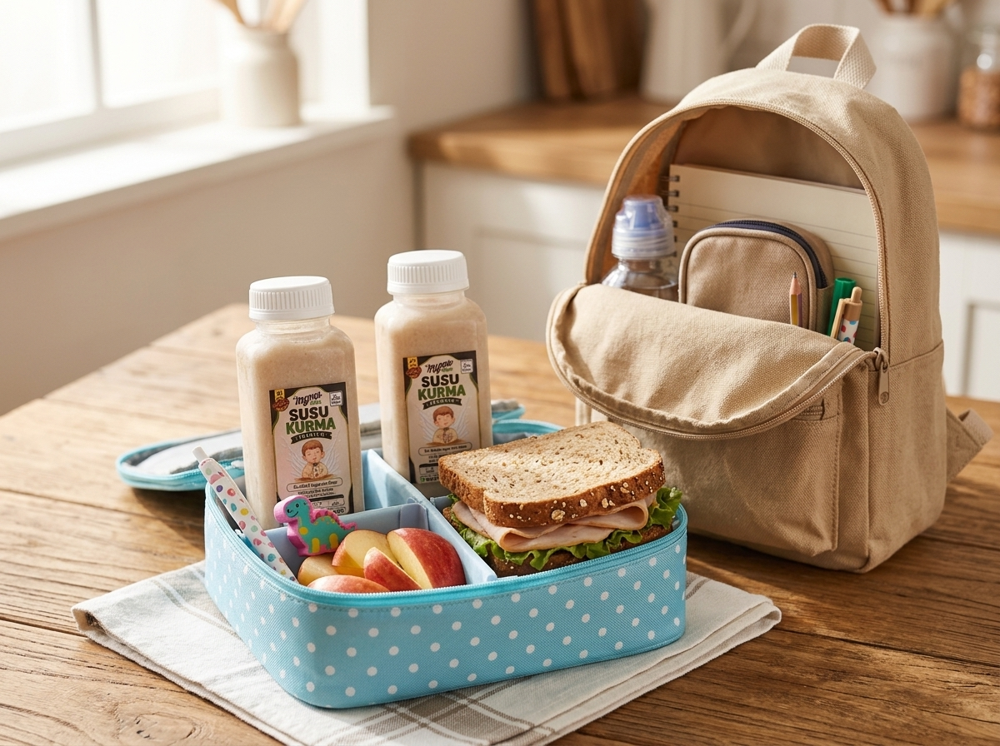
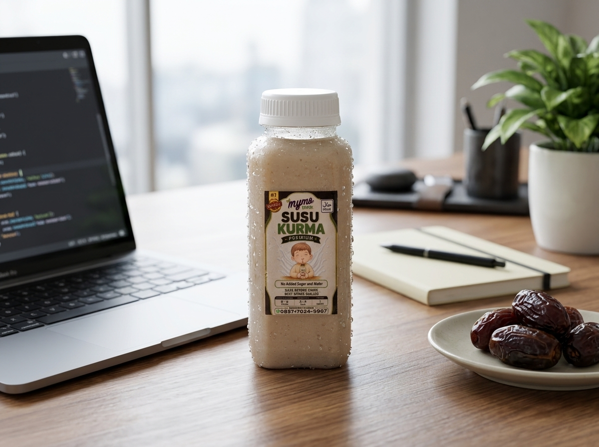
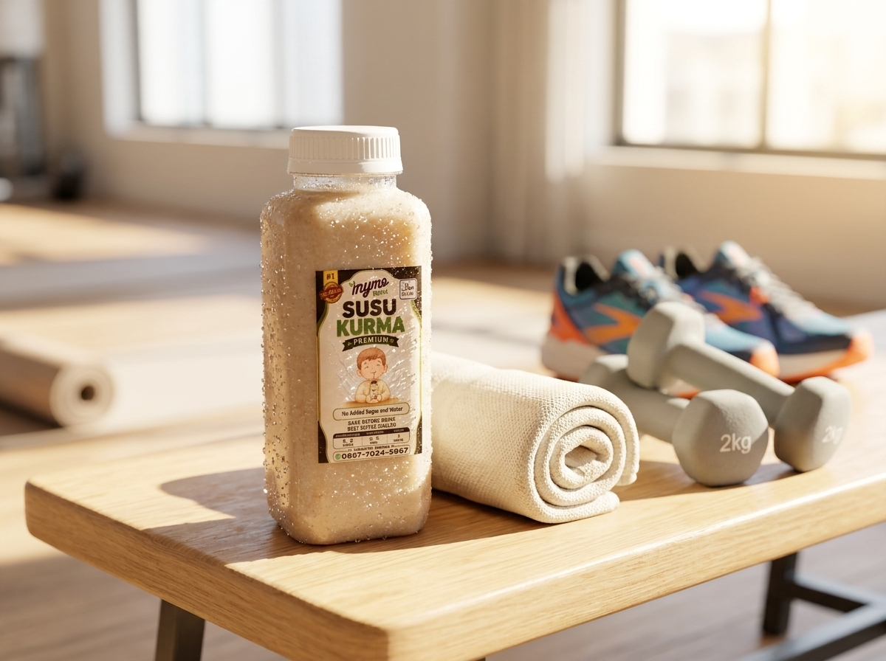

Kemurnian Susu Kurma Asli. Tanpa Gula & Air Tambahan.
MyMo Drink Susu Kurma Premium Original dibuat murni dari susu segar berkualitas dan lumeran manis alami kurma pilihan. Tanpa sirup pemanis, tanpa pengawet, dan tanpa setetes pun air tambahan. Padat nutrisi, creamy alami, dan nikmat disajikan dingin!
Energi Murni
Kurma Asli Kaya Nutrisi

Best Served Chilled
Segar Dingin Maksimal
Kebaikan Murni di Setiap Tetesnya
Diramu khusus dengan resep higienis bernutrisi tinggi untuk menjaga keaslian rasa dan khasiat kesehatan alami keluarga Anda.
No Added Sugar & Water
Tidak ada tambahan air putih pengencer dan tidak ada gula pasir tambahan. Manisnya 100% berasal dari karbohidrat kompleks alami kurma pilihan.
Kaya Kalsium & Antioksidan
Kombinasi susu murni dan kurma melengkapi kebutuhan kalsium, zat besi, serat, dan kalium harian. Sangat berkhasiat sebagai ASI booster dan stamina aktif.
Panduan Ketahanan Segar
Dibuat tanpa bahan kimia pengawet, ketahanan kualitas MyMo:
- Suhu Ruangan: 6 – 8 Jam
- Kulkas / Refrigerator: 3 – 4 Hari
- Freezer (Beku): Hingga 1 Bulan
MyMo Drink Susu Kurma Original
Standar PremiumMinuman Kurma Kemasan Biasa
Di PasaranMyMo Susu Kurma Original
Formula klasik terbaik kami: 100% sari kurma pilihan berpadu susu murni segar tanpa air dan gula tambahan. Tersedia dalam 2 pilihan kemasan botol praktis.
MyMo Original 250ml
Kemasan botol kotak 250ml dengan porsi lebih puas. Cocok untuk sarapan bergizi, teman beraktivitas seharian, atau pemulihan tenaga sehabis olahraga.

MyMo Original 150ml
Kemasan botol bulat mini 150ml yang ringkas dan pas. Paling disukai anak-anak untuk bekal sekolah atau bagi Anda yang ingin tester segar porsi pas.
Paket MyMo Lebih Hemat, Manfaat Berlipat
Cocok untuk stok kulkas keluarga, konsumsi mingguan, maupun bekal harian dengan harga bundling terjangkau.
Paket Trio Hemat
3 Botol Kotak 250ml Original
Hemat Rp 2.000!
Paket Family Sehat
6 Botol Mix Keluarga (3x 250ml & 3x 150ml)
Hemat Rp 2.500!
Paket Mingguan
7 Botol Kotak 250ml (1 Botol Tiap Hari)
Hemat Rp 8.000!
Peluang Bisnis Reseller Susu Kurma MyMo
Dapatkan Paket Reseller Untung (1 Dus isi 24 botol MyMo Original) mulai Rp 200.000 dengan margin keuntungan menarik untuk warung, kantin, & reseller rumahan BSD & sekitarnya.
Teman Setia Setiap Aktivitasmu
Minuman sehat serba guna yang melengkapi setiap aktivitas dari fajar hingga senja.




Sensasi Kesegaran yang Terbukti
Simak ulasan para penikmat susu kurma alami dan testimoni nyata pelanggan setia kami.


“Rasa alaminya sangat otentik tanpa pemanis buatan. Cocok dinikmati dingin saat jeda latihan dan aktivitas padat.”
Sensei Sugimoto — Praktisi Bela Diri
“Produk berkualitas tinggi dari bahan murni. Rekomendasi minuman bergizi harian untuk keluarga Indonesia.”
Dewa Eka Prayoga — Business CoachPertanyaan Seputar MyMo Drink
Ketahui panduan penyimpanan botol, petunjuk minum, dan cara pemesanan.
Sesuai petunjuk resmi pada kemasan botol MyMo:
• Suhu Ruangan (Room Temperature): Bertahan 6 hingga 8 Jam.
• Kulkas / Refrigerator (Chiller): Bertahan 3 hingga 4 Hari.
• Freezer (Kondisi Beku): Bertahan hingga 1 Bulan.
*Disarankan segera simpan di lemari pendingin begitu pesanan tiba.
Prinsip MyMo adalah "No Added Sugar and Water". Kami mengutamakan keaslian nutrisi di mana manisnya 100% murni berasal dari buah kurma yang dihaluskan bersama susu pasteurisasi berkualitas tinggi. Tidak ada pengenceran air putih dan tidak ada sirup gula rafinasi sehingga manfaat kalsium, energi, dan seratnya terserap maksimal oleh tubuh.
1. SHAKE BEFORE DRINK: Kocok botol terlebih dahulu karena bulir sari kurma alami bisa mengendap di dasar botol.
2. BEST SERVED CHILLED: Nikmati dalam kondisi sangat dingin untuk sensasi kesegaran yang maksimal!
Sangat aman dan sangat direkomendasikan! MyMo Original adalah favorit balita dan anak-anak karena bebas dari pemanis buatan. Bagi ibu menyusui, kandungan nutrisi kurma dan susu segar bekerja efektif sebagai ASI booster alami untuk kelancaran produksi ASI.